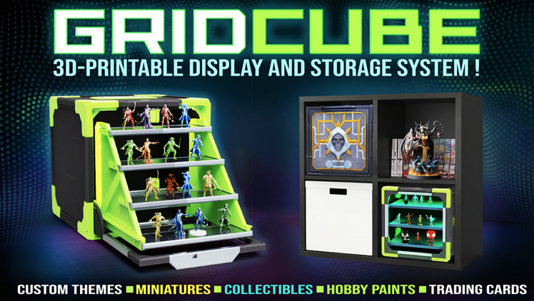
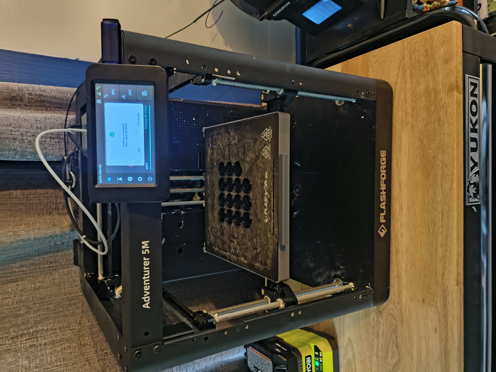
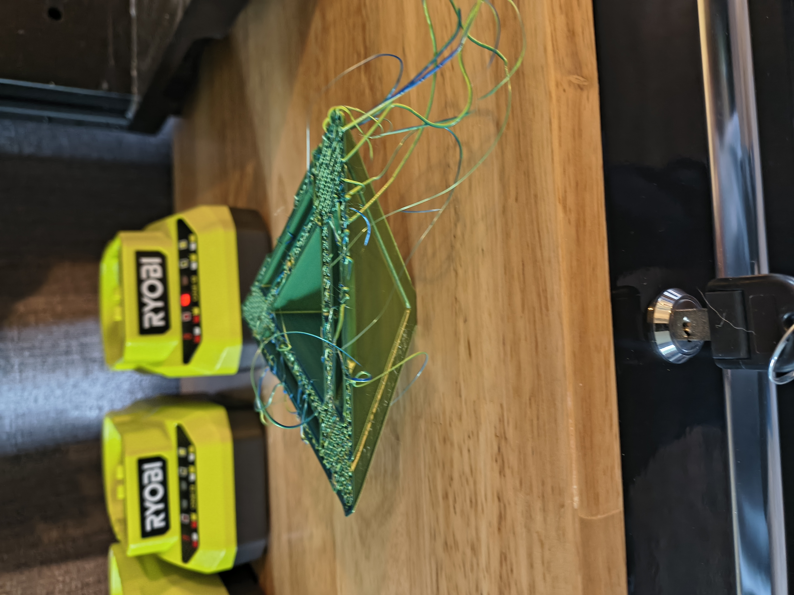
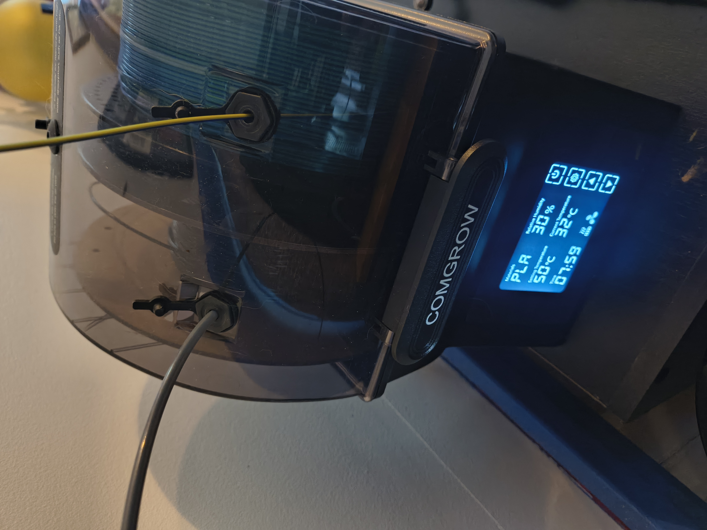

Friday
It's officially friday my dudes, which means that it's officially the weekend. That means it's party time! How about some dog tax?!
This is my pupper named Maggie. She is the best dog I have ever had. She is loyal, lovable, and smart. Plus look at those adorable eyes! Maggie was free, given to us by my Mom and her husband, who were dating at the time. They were also planning on doing long distance trucking together and didn't have anywhere for Maggie to go so they asked us to watch her. Then when they were supposed to pick her up they asked if we wanted to keep her. Honestly, it was a super easy decision.
Kick Starter
I received the files today for a KickStarter my friend Mike and I decided to split the cost on. As I have stated in the past he and I both play OPR together. With nearly any miniature game, one of the hardest obstacles is transporting your figures from one location to another without damaging any of them. I have seen some very cheap and some very expensive options that people have tried. The KickStarter we backed was a 3D printable option to ensure that you can transport your miniatures safely as well as organize a slew of other nerdy things. The KickStarter we backed is called: GridCube

In fact Mike and I have purchased an option before from MyMiniFactory. The one we purchased in the past was called ModiBox. I really like it, but it's a little "janky" in my opinion. What I mean by that is when you start setting up larger boxes and printing them they get a little wobbly. This could be a limitation attributed to the size of my printer, which is not small, but is definitely not the largest.
In an effort to not have to take several boxes per army or make them extremely tall I had to go with the largest box that was available in the core pack. That meant I was making modular large boxes, which is where you print 4 parts of a larger box, fit them together, and if your me, glue them with super glue.
This has worked out pretty well, but lets be honest. GridCube just looks better. Not only do they say I can print the boxes just fine on my printer, but they look substantial and sturdy. This may be the result of using screws to hold them together as well as PLA.
I have 2 printers in my house. One is a FDM printer, which is what I would call the most common type of printer that people have seen or used. It takes spools of plastic feeds them through a hot end that melts the plastic and pushes it through a smaller hole. This allows a large spool to be be compiled into models that fit the need of the user.
My FDM printer is a Flashforge AD5M. I purchased it for a great deal off an auctioning website for over half off. Prior to that I have had several other FMDM printers and as technology has advanced they either became outdated, or I thoroughly abused them. There is a threshold with all items, where the cost to repair them cost more than the cost to replace them. You add the technology improvements that happen very quickly in any tech based sector and it starts to get even harder to not replace an item.

Today I received the first set of files for the Kickstarter and I couldn't wait to print them! I cleared the bed of the previous print, some bases for my miniature figures, and got to slicing and printing!
And it failed!
If you look closely at the picture you can see that the base for the part is relatively small. I tried printing it with no supports, as my slicer seems to think that it's not needed. I also tried printing it without putting any glue on the bed. I know that glueing the bed is a hot take. Some people don't see the need for it and think that if you can't get the models to stick without glue you must not be very good at 3D printing. That may be, but I just want my printer to work, so I used glue commonly to prevent movement of models. So I put glue on the bed, and we'll see if that helps or not.
If this fails again I think my next coarse of action will be to force supports on the model, and if that fails, then I may use a base, which is something I never do.
The only files I have so far are the corners with the KickStarter person promising that remaining files will be coming shortly.
In addition to the my Flashforge printer I also have a filament dryer. I went years without one of these thinking it was not very important. I'll be honest, it has made a ton of difference. I get a lot less stringing and more consistent results with the dryer on than off. Additionally since I purchased it I haven't had to throw any filament away for being brittle or having issues printing. This may also be the result of the fact that I have really dialed in what I think are the best filaments for my printer, or the best settings, but I immediately noticed a difference when I set it up

Below are a few things I have printed on my filament printer. The largest number of FDM prints I make are to support my gaming habits, both for Dungeons and Dragons and OPR.
I have been a DM (Dungeon Master) for DND for as long as I have played DND and I have always wanted dungeon tiles. Dungeon Tiles if you don't know are plastic tiles you can use to construct a 3D representation of the location your players are in. They are absolutely not necessary, but they are cool and fun. The problem is they are also very expensive. I made them myself using my FDM printer, painted them, and them magnified them. They all click together magnetically which makes set up and tear down relatively fast. Making the tiles myself alone constituted the cost of the printer. You can see the cost here. Dungeon Tiles on Amazon. Note, that even in this case you still have to paint them yourself!
